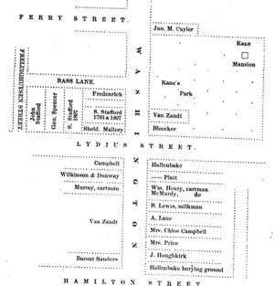
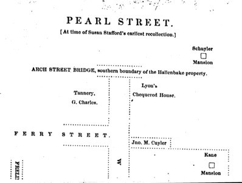

Diagram Map of South Pearl Street
during the early nineteenth century.
[ For more information, click on individual locations ]

This copy of a diagram by an unknown cartographer reflects the layout of South Pearl Street during the early 1800s and was printed in Munsell's Collections on the History of Albany, 3:458. We believe it to be one of the earliest attempts to plot out inhabitation along this one-time path to the pastures!
However, Albany residents began to build along this "cow path" from the beginning of the eighteenth century. Running east from the future South Pearl Street was a section later called Southside or "Cheapside" that was settled by former garrison soldiers and other newcomers whose homes are shown on an assessment roll from the early 1700s. The Lutheran church, dating to the late 1600s, and later the Presbyterian meeting house were built along this street.
By the 1750s, an enclave of weavers and a number of other Albany mainliners lived along the street.
Before 1814, this road was known as "Washington Street" commemorating a walk General George Washington reputedly took from State Street to Schuyler Mansion when he visited Albany in 1783.
The block west of South Pearl and between Plain and Hamilton Streets was "Hallenbeck-intensive" containing the homes of several of Hendrick Hallenbeck's children.
The "Halenbeek Burial Ground," located south of South Pearl and Hamilton Street, was established in the will of Hendrick Hallenbeck in 1764 and served as a family plot until it was dismantled in 1860.

The southern continuation of this drawing (also reproduced (poorly) from volume 3 of Collections), running south from Hamilton Street, across Lydius Street (changed to Madison Avenue in 1867), past the former Yates Mansion (called Kane Mansion in Kane's Park on the map), and continuing south across Ferry Street.
The block of South Pearl Street (south of Hamilton Street to Lydius) included the properties of Barent Sanders and the Van Zandts (recalled today by Van Zandt Street) on the east side and those of the Hoghkerks, Mrs. Price, William Henry (father of Joseph Henry), and others.
South of Lydius: on the southeastern corner with South Pearl was Sheldon Mallery - a merchant at 76 Washington in 1813. New Englander Spencer Stafford utilized land held by his wife's family to build along what became Madison Avenue. The sons of Hessian soldier-turned-storekeeper John C. Fredenrich and the Staffords also built near the intersection of South Pearl and Lydius. However, these references are most helpful for visualizing the mid-nineteenth century.

Another, further continuation shows the Charles tannery, South Pearl Street running across the Beaverkill, past Schuyler Mansion, and almost to the city line. Beyond that, was Cherry Hill in Bethlehem. This entire settlment area falls under the legendary umbrella of the South End. Philip Schuyler's will divided the lands between his mansion and South Pearl Street among his daughters. Only a few years after his death, those lots were being sold to first-time owners.
This reproduction likeness has been turned to facilitate examination. The top of the image faces South toward the part of the Manor that in 1793 became Bethlehem. It later was annexed by the city of Albany. The original southern border crossed South Pearl Street about five blocks south of the Arch Street bridge.
We recognize that this presentation is marred by the poor quality of the images. Hopefully, we will be able to display them more clearly, coherently, and usefully before too long. Please bear with us on this.
first posted 2/20/03; last updated 11/2/16